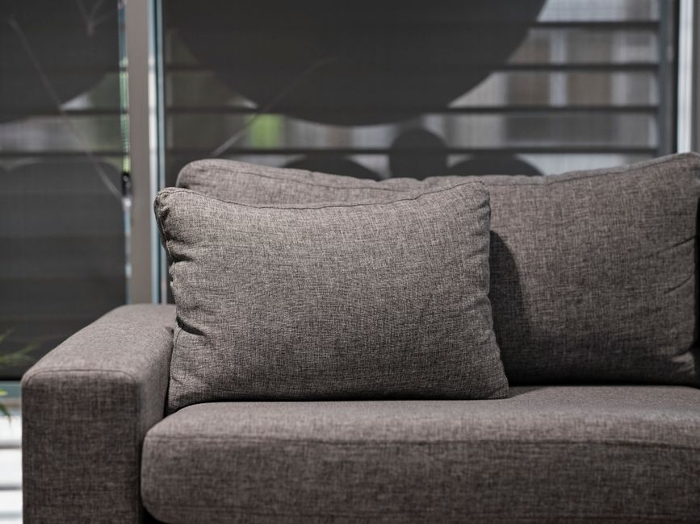
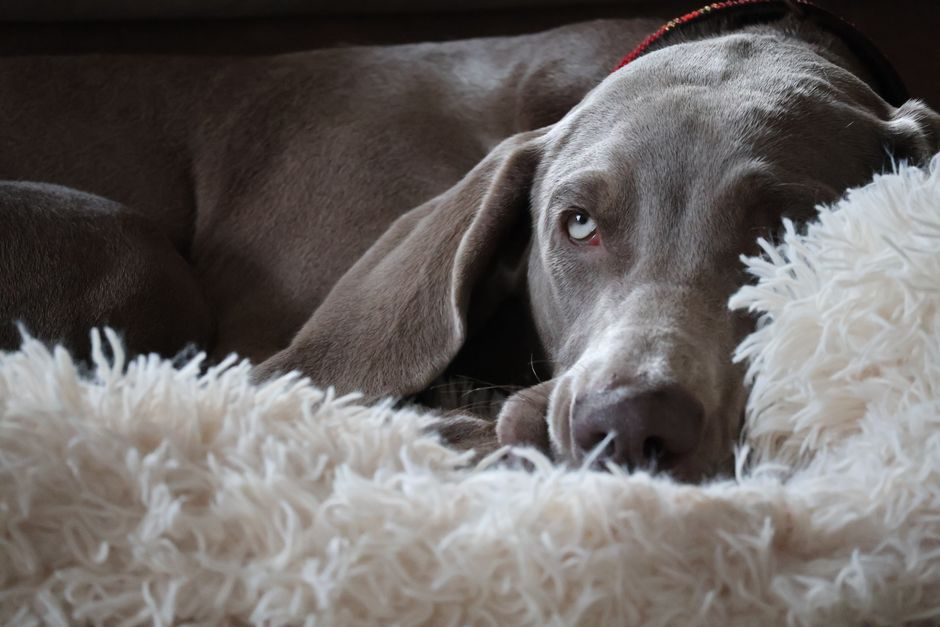

Setting the scale for pristine carpets and upholstery.
Daemonyscale brings precision deep cleaning to your home, removing stubborn stains and reviving tired fabrics with professional care.
Precision Care for Your Home
At Daemonyscale, we specialize in breathing new life into your most used living spaces. As an independent promotional partner for Decker's Carpet Cleaning, we connect homeowners and businesses with top-tier carpet cleaning, rug cleaning, and upholstery cleaning services.
Our focus is on highlighting services that deliver a deep, restorative clean. From extracting embedded dirt to neutralizing allergens, the goal is always to leave your home refreshed, healthy, and inviting for everyone who enters.


Our Core Services
Comprehensive cleaning solutions tailored to your home's unique fabrics.

Deep Carpet Cleaning
Utilizing advanced steam cleaning technology, we penetrate deep into carpet fibers to extract dirt, dust mites, and allergens that regular vacuuming leaves behind. This process not only cleans but revitalizes the texture and color of your carpets.

Upholstery Cleaning
Sofas and armchairs accumulate body oils, dust, and odors over time. Our delicate yet effective upholstery cleaning methods safely lift contaminants from various fabric types, extending the life of your furniture and restoring its original beauty.

Area Rug Care
From sturdy synthetics to delicate natural fibers, area rugs require specialized attention. Our rug cleaning process respects the dyes and weaves of your specific piece, gently washing away grime while preserving the rug's structural integrity.
Targeted Stain Removal
Spills happen, but they don't have to be permanent. We employ targeted stain removal techniques to treat tough spots like wine, coffee, pet accidents, and ink. By identifying the stain's chemical makeup, we apply the precise solution needed to lift it without damaging the surrounding fibers.
Frequently Asked Questions
Common questions about our fabric care processes.
How often should I schedule professional carpet cleaning?
It is generally recommended to have your carpets professionally cleaned every 12 to 18 months. However, homes with high traffic, children, pets, or individuals with severe allergies may benefit from a deep clean every 6 to 9 months to maintain optimal indoor air quality.
Do you offer steam cleaning for delicate upholstery?
Yes, professional steam cleaning (hot water extraction) is highly effective and safe for most upholstery types. For extremely delicate or dry-clean-only fabrics, specialized low-moisture or solvent-based cleaning methods are utilized to ensure the fabric is refreshed without risk of shrinkage or damage.
Can all stains be completely removed?
While advanced stain removal techniques are highly successful on a vast majority of common spots and spills, we cannot guarantee 100% removal of every stain. Some substances may permanently dye the fibers or cause irreversible chemical changes, particularly if the stain has set for a long time.
How long does it take for carpets and furniture to dry?
Drying times can vary based on the cleaning method used, indoor humidity, and airflow. Typically, carpets and upholstery are dry to the touch within 4 to 8 hours after a professional deep clean. Turning on ceiling fans or keeping the HVAC system running can help accelerate this process.
Is rug cleaning performed in my home?
Depending on the size, delicacy, and condition of the rug, cleaning can often be safely performed on-site over appropriate flooring. However, for specialized oriental rugs, deep pet odor removal, or particularly fragile weaves, off-site facility cleaning is usually recommended for the best and safest results.
Client Experiences
Hear from homeowners who renewed their spaces.
"The upholstery cleaning completely transformed our living room sofa. It looks brand new again. Highly recommend the attention to detail and care taken with the fabric!"
Sarah M.
March 2026
"Incredible results on our high-traffic hallway areas. The steam cleaning removed stains I thought were permanent. Very professional and straightforward service."
David L.
January 2026
"Prompt, courteous, and highly effective carpet cleaning. The team was respectful of our home and the drying time was much faster than we had anticipated."
Emily R.
February 2026
Request a Consultation
Connect with local cleaning experts to revitalize your space.